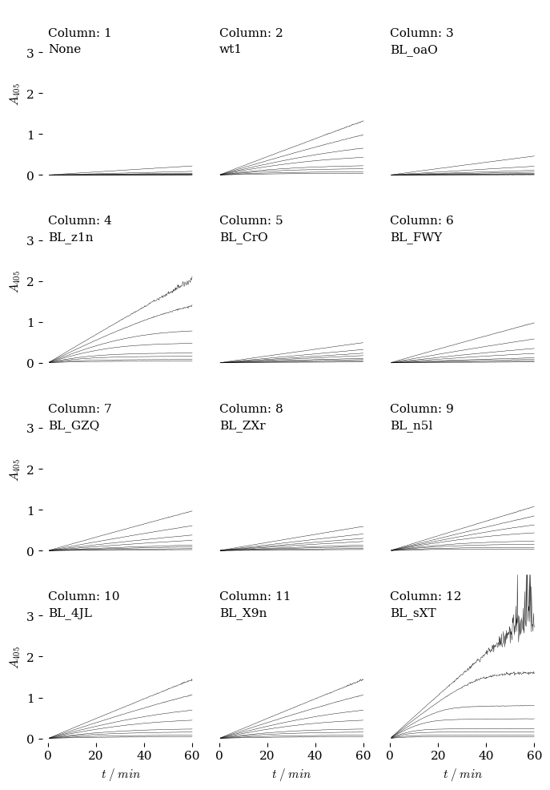

### Read in experimental parameters from plate plan file
### Create lists of column & row names, enzyme names, enzyme & substrate conc
### Convert units to standard units (molar and min^-1)
### Calculate e_405 for nitrophenol at given pH
import pandas as pd
#!wget https://raw.githubusercontent.com/blinkletter/StealThisCode/main/BiochemToolbox.py
#!pip install uncertainties # to install 'Uncertainties' package in Colab.
import BiochemToolbox as BT
import numpy as np
file_location = "data1/plateplans/"
file_name = "Plate1.csv"
pH = 7.0
df, plate, e_NPA = BT.read_plate_setup(file_location+file_name, pH)
print(plate.keys())
dict_keys(['row_name_list', 'S_conc_list', 'lane_name_list', 'E_conc_list', 'E_Name_list'])
### Contact sheet. Ticks deleted on plots inside the set.
#!wget https://raw.githubusercontent.com/blinkletter/StealThisCode/main/BiochemToolbox.py
#!pip install uncertainties # to install 'Uncertainties' package in Colab.
import BiochemToolbox as BT
BT.contact_sheet("data1/Plate1",
columns = plate["lane_name_list"],
rows = plate["row_name_list"],
enzymes = plate["E_Name_list"],
fancy = True)

Plot saved as plots/plot_contact_sheet.pdf
()
### Plot initial rates for a well or a set of wells
#!wget https://raw.githubusercontent.com/blinkletter/StealThisCode/main/BiochemToolbox.py
#!pip install uncertainties # to install 'Uncertainties' package in Colab.
import BiochemToolbox as BT
### get plate info from plate plan file
df, plate, e_NPA = BT.read_plate_setup("PlatePlan0_setup.csv", pH = 7.0)
### Chose columns to plot
Column_list = ["1","2","3"]
#Column_list = ["4", "5", "6"]
#Column_list = plate["lane_name_list"]
### Chose rows within the columns
#Row_list = ["A","B","C"]
Row_list = ["B"]
Row_list = plate["row_name_list"]
plate_name_list = ["plate1"]
for plate_name in plate_name_list:
data_file_root_name = "data1/" + plate_name
result = BT.plot_lanes(data_file_root_name,
Column_list, Row_list,
Fraction_time_span = .5,
Line_Fit = True,
Display_Plot = True,
Display_Data = True,
fancy = True,
tiny_points = True,
tiny_line = False
)
| Column | Row | slope | slope stderr | int | int stderr | RSQ | |
|---|---|---|---|---|---|---|---|
| 0 | 1 | A | 0.000024 | 0.000010 | 0.000157 | 0.000177 | 0.030433 |
| 1 | 1 | B | 0.000086 | 0.000009 | -0.000228 | 0.000159 | 0.338264 |
| 2 | 1 | C | 0.000138 | 0.000009 | 0.000062 | 0.000160 | 0.567253 |
| 3 | 1 | D | 0.000217 | 0.000009 | 0.000103 | 0.000162 | 0.757405 |
| 4 | 1 | E | 0.000445 | 0.000009 | 0.000149 | 0.000162 | 0.929754 |
| 5 | 1 | F | 0.000759 | 0.000009 | -0.000119 | 0.000158 | 0.975709 |
| 6 | 1 | G | 0.001496 | 0.000010 | 0.000015 | 0.000171 | 0.992614 |
| 7 | 1 | H | 0.003723 | 0.000010 | 0.000435 | 0.000168 | 0.998833 |
| 8 | 2 | A | 0.000024 | 0.000010 | 0.000197 | 0.000171 | 0.031879 |
| 9 | 2 | B | 0.000073 | 0.000010 | 0.000056 | 0.000177 | 0.226395 |
| 10 | 2 | C | 0.000143 | 0.000010 | 0.000092 | 0.000184 | 0.514766 |
| 11 | 2 | D | 0.000212 | 0.000010 | 0.000209 | 0.000170 | 0.731857 |
| 12 | 2 | E | 0.000438 | 0.000009 | 0.000226 | 0.000166 | 0.923946 |
| 13 | 2 | F | 0.000753 | 0.000008 | -0.000099 | 0.000141 | 0.980400 |
| 14 | 2 | G | 0.001492 | 0.000009 | 0.000155 | 0.000163 | 0.993234 |
| 15 | 2 | H | 0.003735 | 0.000010 | 0.000189 | 0.000174 | 0.998756 |
| 16 | 3 | A | 0.000030 | 0.000010 | 0.000235 | 0.000167 | 0.052955 |
| 17 | 3 | B | 0.000061 | 0.000010 | 0.000156 | 0.000171 | 0.184166 |
| 18 | 3 | C | 0.000133 | 0.000009 | 0.000394 | 0.000163 | 0.535582 |
| 19 | 3 | D | 0.000219 | 0.000009 | 0.000154 | 0.000164 | 0.758150 |
| 20 | 3 | E | 0.000471 | 0.000010 | -0.000276 | 0.000169 | 0.931569 |
| 21 | 3 | F | 0.000739 | 0.000009 | 0.000226 | 0.000156 | 0.975104 |
| 22 | 3 | G | 0.001492 | 0.000009 | 0.000148 | 0.000162 | 0.993331 |
| 23 | 3 | H | 0.003735 | 0.000010 | 0.000345 | 0.000177 | 0.998712 |
Plot saved as data1/data.pdf
Data saved as data1/data.csv
### Analysis of a single cell with slope and differentials
#!wget https://raw.githubusercontent.com/blinkletter/StealThisCode/main/BiochemToolbox.py
#!pip install uncertainties # to install 'Uncertainties' package in Colab.
import BiochemToolbox as BT
data_name = "data1/plate0"
BT.dual_plot_w_residuals(data_name, "2", "H",
Fraction_time_span = 0.5,
plot_file = "plots/Cell_w_residuals",
fancy = True)
slope = 0.00373 +/- 9.92e-06
Plot saved as plots/Cell_w_residuals_2_H.pdf
()
### Analysis of a single cell with slope and differentials
#!wget https://raw.githubusercontent.com/blinkletter/StealThisCode/main/BiochemToolbox.py
#!pip install uncertainties # to install 'Uncertainties' package in Colab.
import BiochemToolbox as BT
lane_name = "7"
row_name = "C"
data_name = "data1/data"
BT.plot_four_w_residuals(data_name, lane_name, row_name,
Fraction_time_span_medium = 0.2,
Fraction_time_span_short = 0.05,
plot_file = "plot1/Cell_w_residuals",
fancy=True)
slope = 0.00541 +/- 5.07e-05
slope = 0.00642 +/- 0.000357
Plot saved as plot1/Cell_w_residuals_7_C.pdf
()